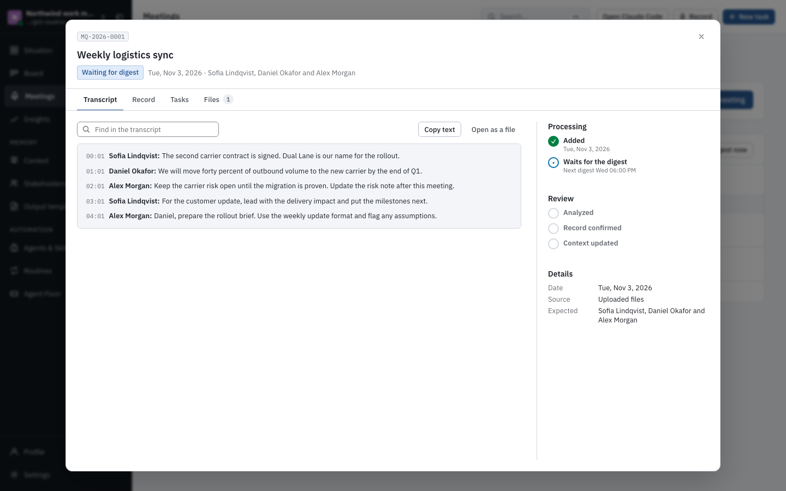

gtd
Get Things Done
AI memory that
grows with
your work.
Record. Review. Remember. Deliver.
Give your agent the context to do the work.
Offline transcription
Plain Markdown
MEETINGS → REVIEWED MEMORY → TASKS
